Ocean plastic is hard to find — it’s spread over huge areas of sea and boats can’t search everywhere. Our project uses free satellite images and AI to point to the exact patches of water that likely contain floating plastic, then predicts where that plastic will float next so a cleanup crew knows where to go before it reaches the coast.
The whole journey, in 7 simple steps
Every scan the system runs goes through the same 7 stages. This is the “engine” of the project — you’ll see these exact stages appear on the Map Explorer and Pipeline pages.
STEP 1
Scan scene
Download the free satellite photo of the chosen sea area.
STEP 2
FDI index
A colour formula flags pixels that might be floating material.
STEP 3
Classify (AI)
The AI labels each flagged pixel: Plastic, Algae, Sea Foam or Water.
STEP 4
Cluster
Nearby plastic pixels are grouped into “hotspots”.
STEP 5
Clay verify
A bigger second AI double-checks each hotspot.
STEP 6
Drift
Predict where it floats over 72 h using currents + wind.
STEP 7
Alerts
Raise a warning if a hotspot is severe or coast-bound.
Why two AIs? The first AI (called the MLP) is fast and checks every pixel. The second AI (called Clay) is larger and gives a “second opinion” on the hotspots. When both agree, we mark it Confirmed. When only one flags it, we mark it Possible. This is how we keep false alarms low.
How it’s built
The three parts of the system
You don’t need to be technical to explain this. The project is made of three pieces that talk to each other.
1. The website (Frontend)
Everything you click and see — the pages, maps, charts and buttons. Built with React. This is what the panel is looking at on screen.
2. The server + database (Backend)
The memory of the system. It stores users, past detections and scan results, handles login, and enforces who is allowed to see what.
3. The AI engine (Python)
The brain. It downloads satellite images and runs the 7-stage pipeline — the FDI formula, the AI classifier, the clustering, the Clay check and the drift forecast.
+ Outside data sources
Sentinel-2 (free European satellite photos), Open-Meteo (real ocean currents & wind for the drift forecast), and the Clay foundation model running on a GPU.
Is the data real? Yes. The images are real, free Sentinel-2 satellite photos. The AI was trained on two real, published, scientist-labelled datasets — MARIDA and MADOS. Nothing on screen is faked; every number is computed by the real pipeline.
Who can see what
The three user roles (access control)
Not everyone sees the same thing. The system has three roles, each with more access than the last. This is why a “Field Officer” sees fewer menu items than an “Administrator”.
Page / area
Field Officer (basic “user”)
Coast Guard (command)
Administrator (system owner)
Command Center, Map Explorer, Areas, Records, Pipeline, Field Ops, Settings
✔ Yes
✔ Yes
✔ Yes
AI Lab (view model report card) & Analytics & Reports
✘ Hidden
✔ Yes
✔ Yes
Active Learning (label data → retrain the model)
✘ Hidden
✘ Hidden
✔ Yes
Admin Panel (manage users, roles & system config)
✘ Hidden
✘ Hidden
✔ Yes
In plain words: a Field Officer detects plastic and runs field missions. A Coast Guard user does all of that plus sees the model’s report card and the reports. An Administrator can do everything, plus the two things that change the system itself: retraining the AI and managing users. Hidden pages are blocked three ways — the menu link is removed, the search can’t jump to them, and typing the web address is bounced back.
Page-by-page walkthrough
Every page, explained simply
From here on, each section is one page of the app: a screenshot, a one-line summary, what it’s for, what’s on it, and a sentence you can say to the panel.
SIGN IN
Login screen
First screen · before you enter the app
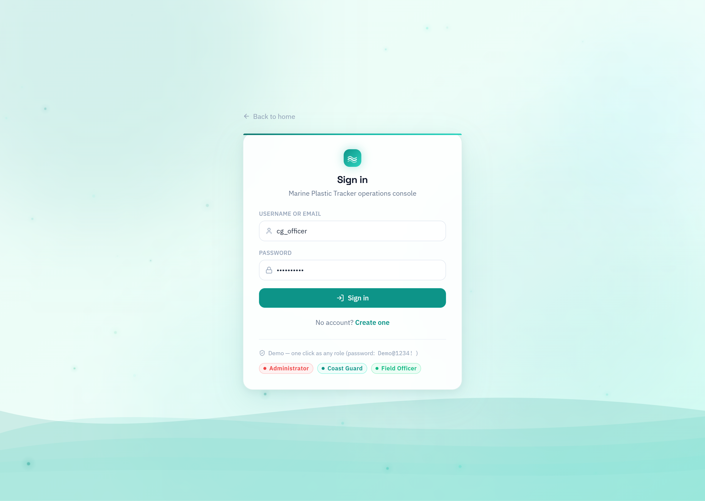
In one line: the front door — you sign in, and the system decides which role you have.
What it’s for
Signing in securely. It also supports 2-factor authentication (2FA) for extra security. For the demo there are one-click buttons to sign in as each role.
What’s on it
Username & password fields
Optional 6-digit 2FA code
Quick “sign in as a role” demo buttons
Say this to the panel“This is the secure sign-in. Your account has a role, and that role decides what you’re allowed to see and do inside the app.”
PAGE 1
Command Center
Menu: Monitor › Command Center · the home screen
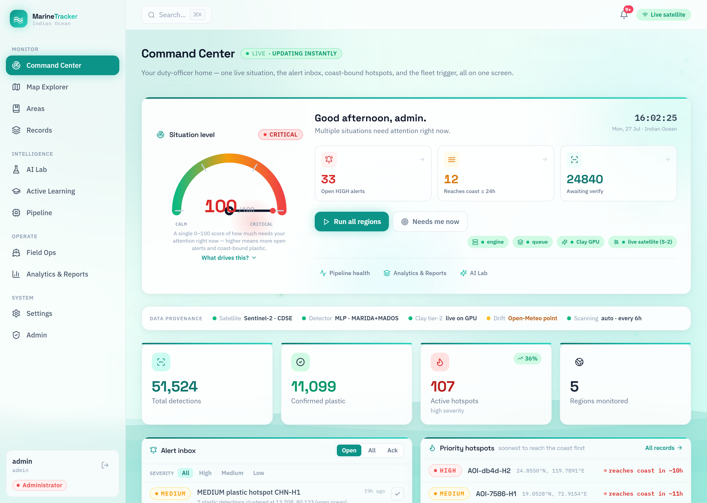
In one line: the “home” dashboard — one glance tells the duty officer how bad things are right now and what needs attention.
What it’s for
A single situation screen for whoever is on duty. It combines the most urgent information so they don’t have to hunt across pages.
What’s on it
Situation level gauge (0–100 — how much needs attention)
Open high alerts, hotspots reaching the coast soon, detections awaiting checking
Big totals: detections, confirmed plastic, active hotspots, regions
The alert inbox and priority hotspots list
“Run all regions” button to trigger a fresh scan
Say this to the panel“This is the operator’s home page. The gauge is a simple 0–100 score of how urgent the situation is, and everything urgent — alerts, coast-bound plastic, things to verify — is on this one screen.”
PAGE 2
Map Explorer
Menu: Monitor › Map Explorer
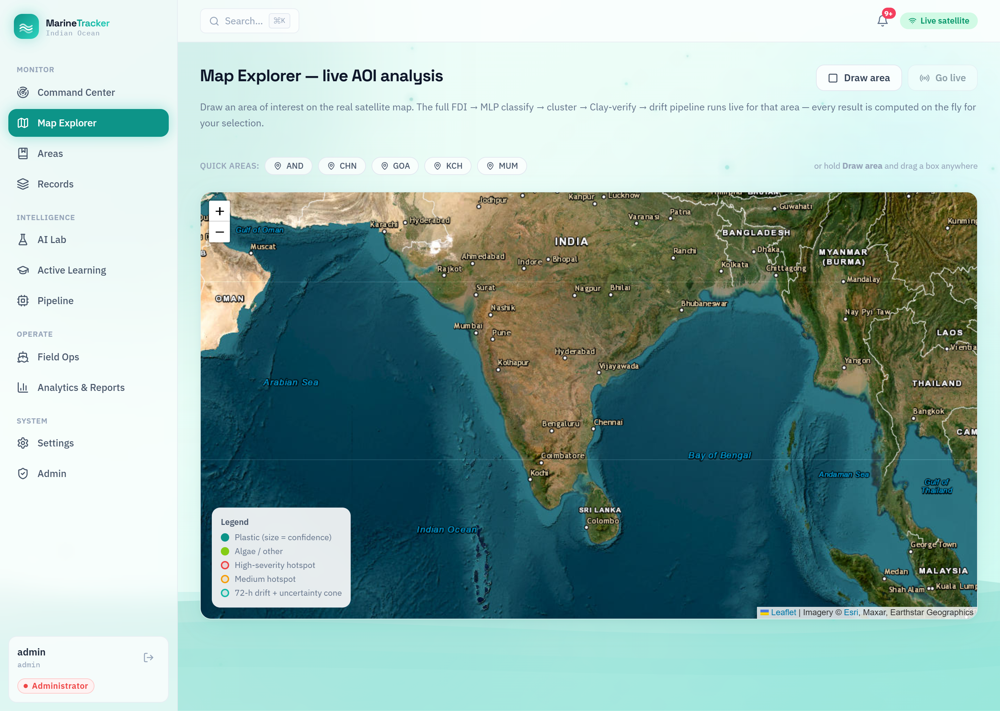
In one line: draw a box on the real satellite map and the full 7-stage pipeline runs live for exactly that area.
What it’s for
Scanning any patch of sea you choose. You draw an Area of Interest (a box) on the map and the system fetches the satellite image and analyses it on the spot.
What’s on it
Real satellite map you can pan and zoom
Coloured dots for detections (plastic, algae, etc.)
The “Live processing” strip showing all 7 stages running
A legend and result counts (Plastic / Algae / Sea Foam / Water)
Note on the “Live processing” timings: each stage shows how long it took. Stages that finish in under a millisecond now show “<1 ms” (they really ran — there was just nothing to process for that area). If a scan finds no plastic, that’s the correct result for a land or clear-water area, not a bug.
Say this to the panel“I draw a box on the live satellite map, and the system downloads that image and runs the whole detection pipeline for just that area — the stages you see lighting up are the real steps happening.”
PAGE 3
Areas
Menu: Monitor › Areas
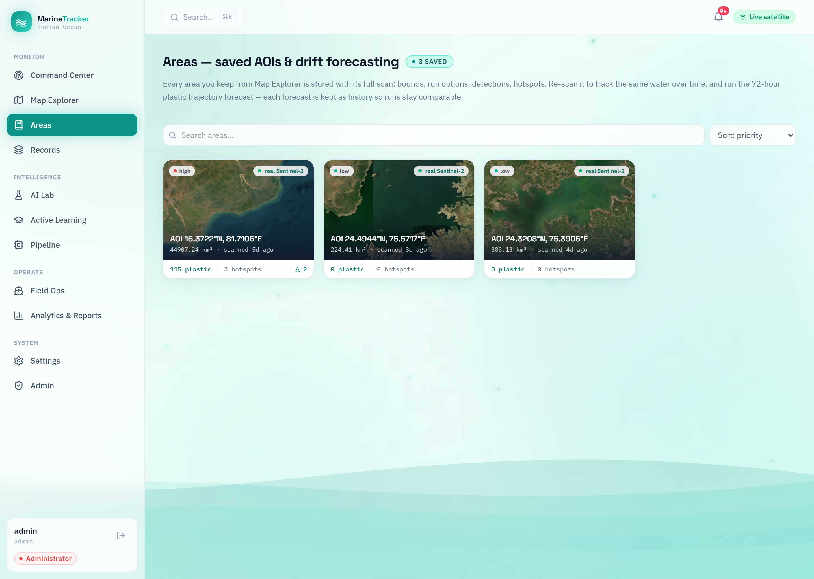
In one line: your saved sea areas — re-scan the same water over time and run a 72-hour “where will the plastic drift” forecast.
What it’s for
Keeping and re-visiting areas you care about. Any area you save from Map Explorer is stored with its full scan, so you can watch the same water change over days.
What’s on it
Your saved areas with their last scan results
A “re-scan” button to check the same water again
The 72-hour drift forecast — a predicted path plus an uncertainty cone
Forecast history, so past runs stay comparable
Say this to the panel“Areas lets us monitor the same stretch of sea over time and predict where floating plastic will travel in the next three days, so a crew can intercept it before it hits the shore.”
PAGE 4
Records
Menu: Monitor › Records
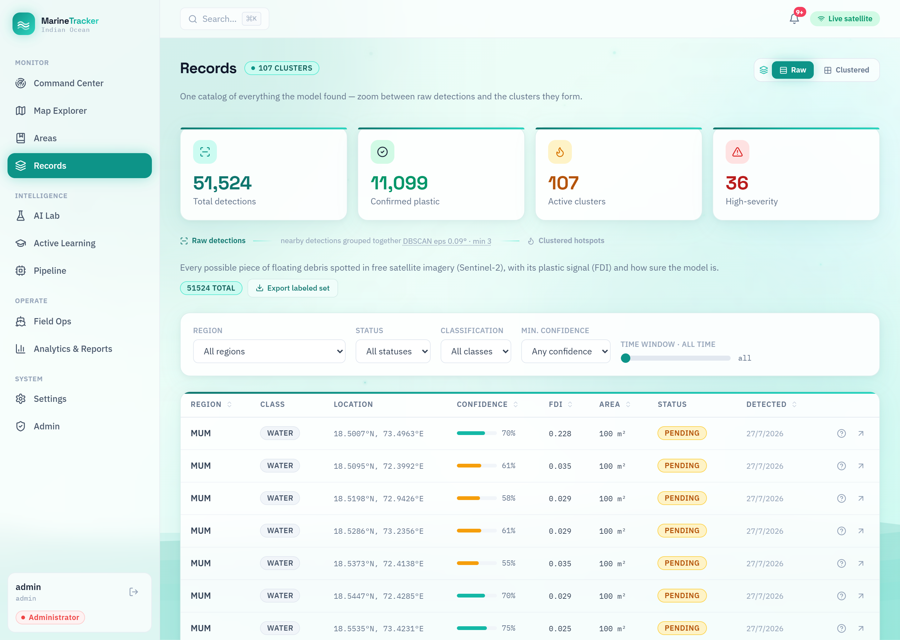
In one line: the searchable catalogue of everything the model has ever found — the project’s evidence log.
What it’s for
Browsing the full history of detections. Every scan saves its results here, so this grows over time into a complete record you can filter and export.
A “Raw” view (every single detection) and a “Clustered” view (grouped hotspots)
Filters: region, status, class, confidence, time window
Each row: location, class, confidence, FDI value, status
Is it real-time? No — and that’s by design. Records is the saved history. The live scanning happens on Map Explorer and Pipeline; Records is where all those past results are stored so you can search them later.
Say this to the panel“Records is our evidence archive — every detection from every scan is stored here with its confidence and location, and we can filter it by region, class or date, or export it.”
PAGE 5 · Coast Guard & Admin only
AI Lab
Menu: Intelligence › AI Lab
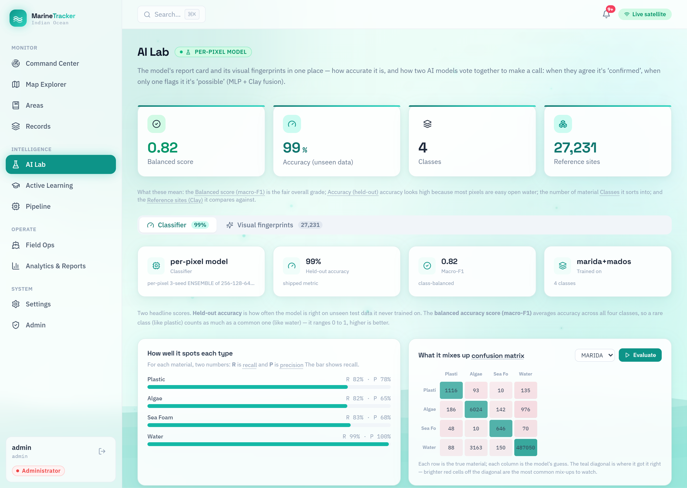
In one line: the model’s report card — how accurate the AI is, and what it tends to mix up.
What it’s for
Showing, honestly, how good the AI is. It’s where you prove the model actually works and understand its weak spots.
What’s on it
Balanced score (macro-F1) 0.82 — the fair overall grade
Accuracy 99% — high, but inflated because most sea pixels are easy water
Per-class scores (how well it finds Plastic, Algae, Foam, Water)
A confusion matrix — what the model mixes up
“Visual fingerprints” from the Clay model (27,231 reference sites)
Important honesty point: always quote the balanced score (macro-F1 = 0.82), not the 99% accuracy. The 99% looks amazing only because the ocean is mostly water and water is easy — the fair score that treats rare plastic as importantly as common water is 0.82.
Say this to the panel“This is the model’s report card. We lead with the balanced score of 0.82 because it’s the honest measure — it finds about 82% of real plastic, and the confusion matrix shows exactly what it occasionally mixes up.”
PAGE 6 · Admin only
Active Learning
Menu: Intelligence › Active Learning
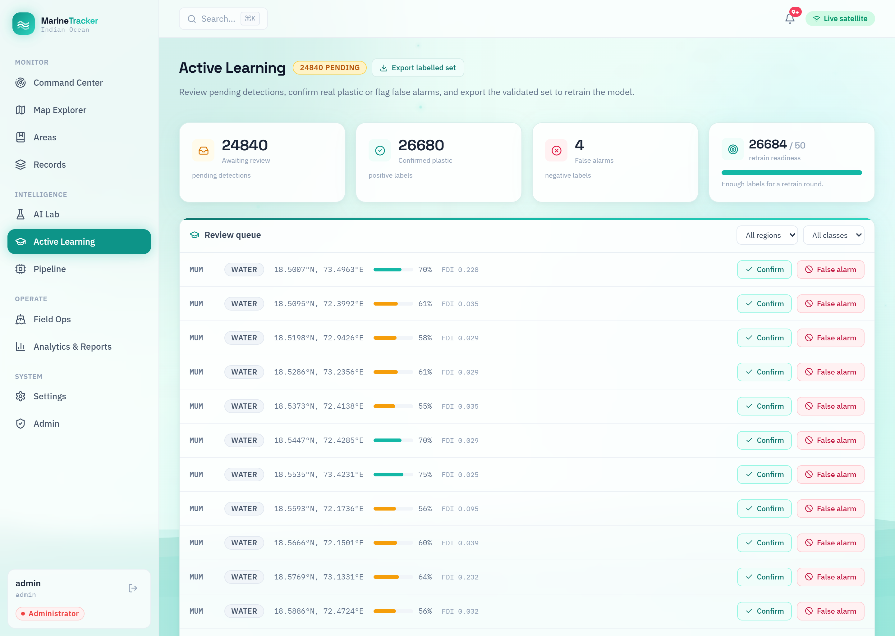
In one line: a human checks the AI’s guesses (“yes plastic” / “false alarm”), and those corrections are used to make the model smarter.
What it’s for
Human-in-the-loop improvement. A person reviews uncertain detections and confirms or rejects them. Collecting enough corrections lets us retrain the model to be more accurate.
What’s on it
How many detections are awaiting review
Counts of confirmed plastic vs. false alarms
A “retrain readiness” bar (enough labels for a new training round?)
A queue of detections with Confirm / False alarm buttons
Export the checked set to retrain the model
Why Admin-only? Confirming labels here feeds directly into retraining the AI — that changes the whole system, so only an Administrator can do it.
Say this to the panel“This closes the loop: a human confirms or rejects the AI’s guesses, and those verified labels are exported to retrain the model — so it keeps getting better over time.”
PAGE 7
Pipeline
Menu: Intelligence › Pipeline
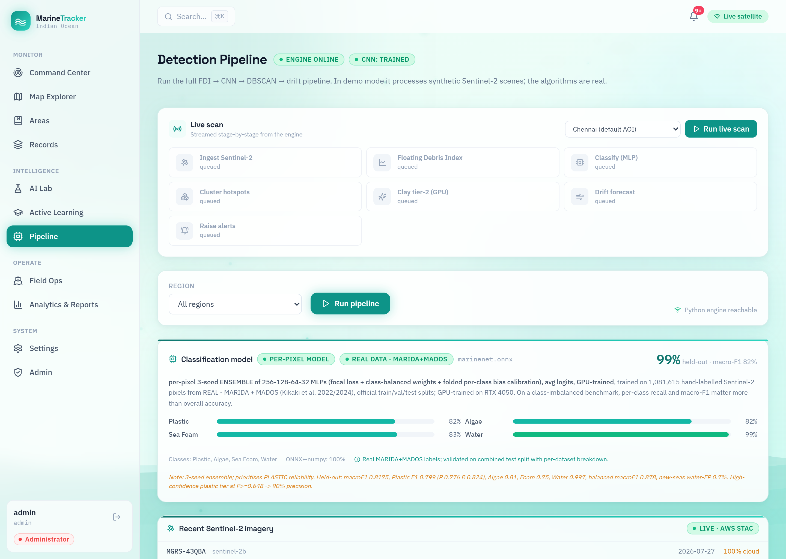
In one line: run the full detection pipeline for a whole region and watch each stage complete, step by step.
What it’s for
Running and watching the engine directly — the same 7 stages as Map Explorer, but for a saved region rather than a hand-drawn box. Good for demonstrating that the pipeline is real.
What’s on it
A “live scan” you can trigger and stream stage-by-stage
Each stage card with its real duration and a short result line
The final counts: detections, plastic, hotspots, confidence
Say this to the panel“The Pipeline page runs the exact same detection engine end-to-end and streams each stage as it finishes — it’s the clearest way to show the real processing steps.”
PAGE 8
Field Ops
Menu: Operate › Field Ops
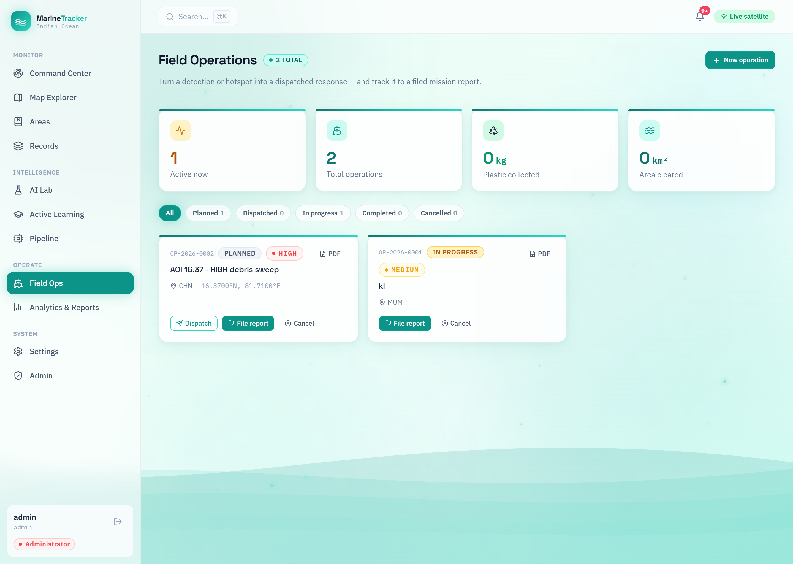
In one line: turn a detection into a real cleanup mission and track it from “planned” to a filed report.
What it’s for
The “do something about it” page. It connects detection to action — you dispatch a crew to a hotspot and follow the mission to completion.
What’s on it
Stat cards: active missions, total, plastic collected (kg), area cleared (km²)
Status columns: Planned → Dispatched → In progress → Completed
Mission cards with severity, location and actions (Dispatch, File report, Cancel)
PDF export of a mission report
Say this to the panel“Field Ops is where a detection becomes a real response — we dispatch a crew to a hotspot, track the mission, and record how much plastic was collected.”
PAGE 9 · Coast Guard & Admin only
Analytics & Reports
Menu: Operate › Analytics & Reports
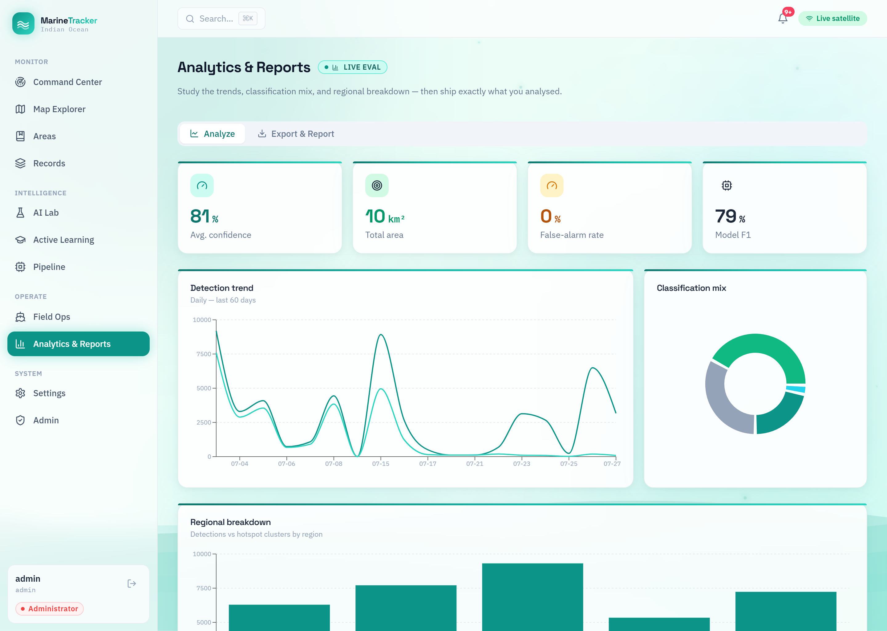
In one line: the trends and charts — then export exactly what you analysed as a report (PDF/CSV/GeoJSON).
What it’s for
Understanding the bigger picture over time and producing shareable reports for stakeholders.
What’s on it
Headline numbers: average confidence, area, false-alarm rate, model score
Detection trend over the last 60 days
Classification mix (how much plastic vs algae vs foam vs water)
Regional breakdown, and an Export & Report tab to download the data
Say this to the panel“Analytics shows the trends and the class mix over time, and lets us export a clean report — so findings can be shared with authorities, not just viewed on screen.”
PAGE 10
Settings
Menu: System › Settings
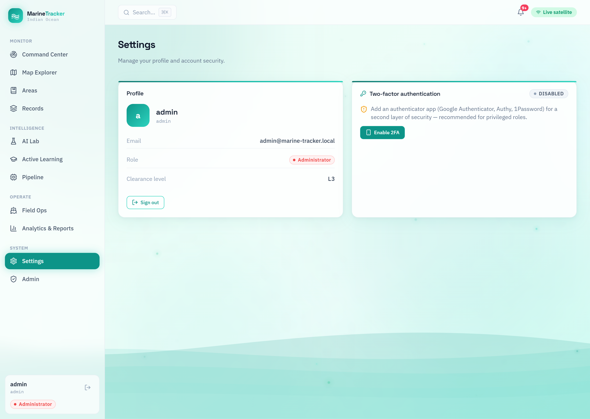
In one line: manage your own profile and account security (like turning on 2-factor authentication).
What it’s for
Personal account management — this is your profile, available to every role.
What’s on it
Your profile details
Password & two-factor authentication (2FA) setup
Session / preference options
Say this to the panel“Settings is each user’s own account page — profile and security, including two-factor authentication.”
PAGE 11 · Admin only
Admin Panel
Menu: System › Admin
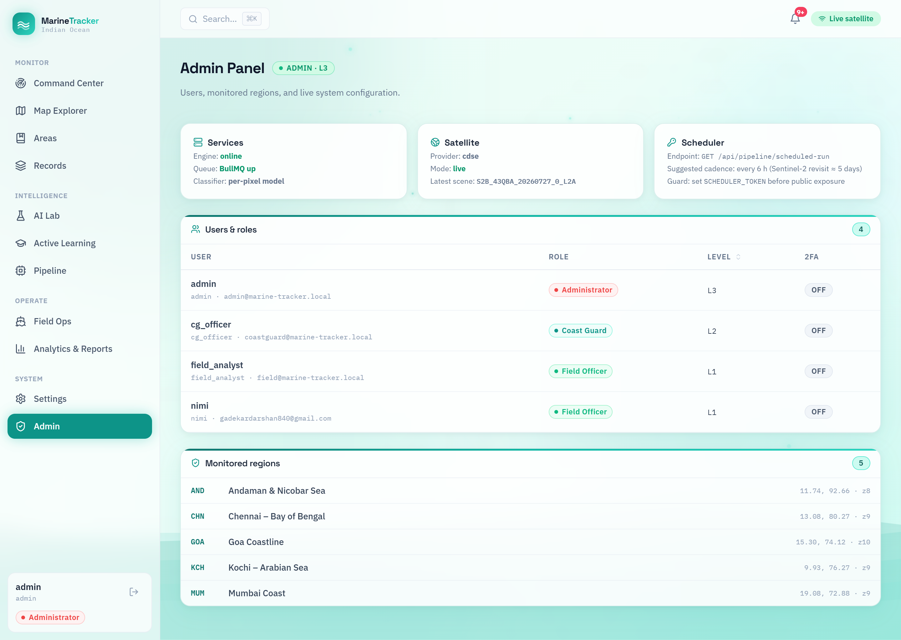
In one line: the control room — manage users & their roles, see the monitored regions, and check the system’s health.
What it’s for
Running the system itself. This is the one area only an Administrator can open — it’s about managing people and configuration, not detecting plastic.
What’s on it
Users & roles table — who has which role and clearance level
Services health — engine, queue and classifier status
Satellite status — provider and latest scene downloaded
Scheduler — how often scans run automatically
The list of monitored regions
Say this to the panel“The Admin Panel is the system control room — only an administrator can manage users and their roles, and check that the engine, queue and satellite feed are all healthy.”
The numbers, honestly
How good is the model, really?
Panels always ask “how accurate is it?” Here are the true numbers and how to present them without over-claiming.
What
Number
What it means (simple)
Balanced score (macro-F1)
0.82
The fair overall grade. Treats rare plastic as importantly as common water. Lead with this.
Plain accuracy
99%
Looks huge, but it’s inflated — most of the sea is water, and water is easy. Don’t over-sell this.
Plastic — recall
~82%
Of the real plastic, it correctly flags about 82%.
Plastic — precision
~78%
Of the things it calls plastic, about 78% really are.
High-confidence plastic
~90% precise
When it’s very sure, it’s right ~9 times out of 10 — this is what feeds hotspots & dispatch.
Water
~99%
Almost never confuses open water — very reliable.
Trained on: MARIDA + MADOS — real, published, scientist-labelled satellite datasets. The honest headline: “detecting plastic from space is genuinely hard because plastic and other floating matter look similar to a satellite — so we sell precision and a full operations workflow, not a perfect score.”
Plain-English glossary
Words the panel might ask about
Sentinel-2
A free European satellite that photographs the Earth about every 5 days. Our image source.
AOI (Area of Interest)
The box you draw on the map to choose which patch of sea to scan.
FDI (Floating Debris Index)
A formula using satellite colour bands that flags pixels that might be floating material.
MLP
The small, fast neural network that labels each flagged pixel (Plastic/Algae/Foam/Water).
DBSCAN
A method that groups nearby detection points into clusters (“hotspots”).
Hotspot
A cluster of plastic detections close together — what a crew would be sent to.
Clay
A large pre-trained AI (“foundation model”) used as a second opinion to confirm hotspots.
Drift forecast
A 72-hour prediction of where floating plastic will travel, using real currents and wind.
macro-F1
A fair accuracy score that treats rare classes (plastic) as importantly as common ones (water).
Confidence
How sure the model is about a detection, shown as a percentage.
Cheat-sheet
Likely panel questions & simple answers
Q: Is the data real or simulated?
Real. Free Sentinel-2 satellite imagery, and the AI is trained on real published datasets (MARIDA + MADOS). Every number on screen is computed by the actual pipeline.
Q: How accurate is it?
The fair overall score (macro-F1) is 0.82. For plastic specifically it finds ~82% of real plastic, and ~78% of its plastic calls are correct; its high-confidence plastic is ~90% precise. We lead with the balanced score, not the 99% accuracy, because 99% is inflated by easy open water.
Q: Is it real-time?
Scanning runs on demand and on a schedule (roughly every few hours, matching the satellite’s revisit). The Records page is the saved history of all past scans.
Q: What makes it different / novel?
Four things: (1) two AIs vote together (MLP + Clay) to cut false alarms; (2) a 72-hour drift forecast to act before plastic reaches the coast; (3) a full operations workflow — detect → dispatch a crew → file a report; (4) honest, transparent metrics.
Q: What are the limitations?
Plastic is spectrally hard — it can look like algae or foam to a satellite. Very small (sub-pixel) items are missed, and clouds or muddy/turbid water reduce reliability. We’re honest about this and grade the model fairly.
Q: Why do some processing stages show “<1 ms”?
They ran, but had nothing to process for that area (for example, no plastic pixels), so they finished almost instantly. It’s the correct result, not a broken stage.
Q: Why can’t a normal user see everything?
Role-based access control. A Field Officer detects and runs missions; a Coast Guard user also sees the model report and analytics; only an Administrator can retrain the model and manage users. It’s enforced on the website and on the server.
Marine Plastic Tracker — project explainer for the panel. Screenshots captured from the running application. Prepared for a 4-member team. Present the model’s balanced score (0.82) as the honest headline number.